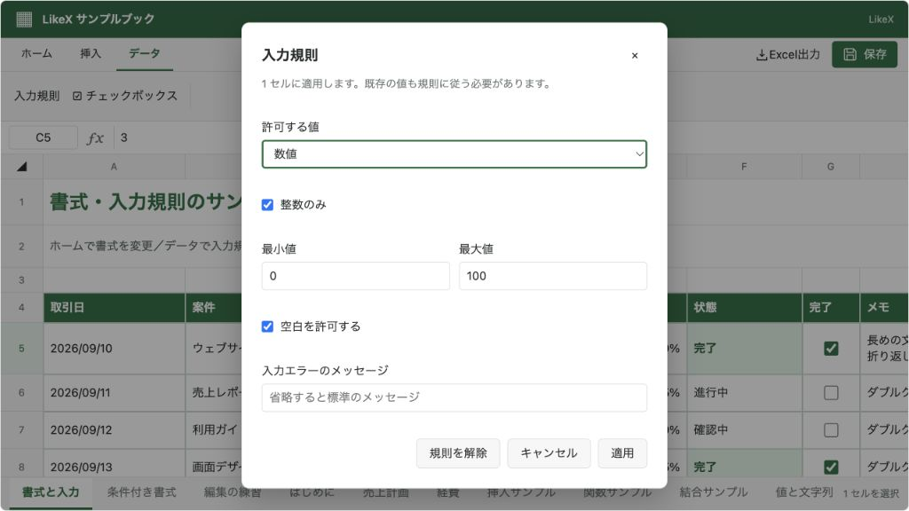
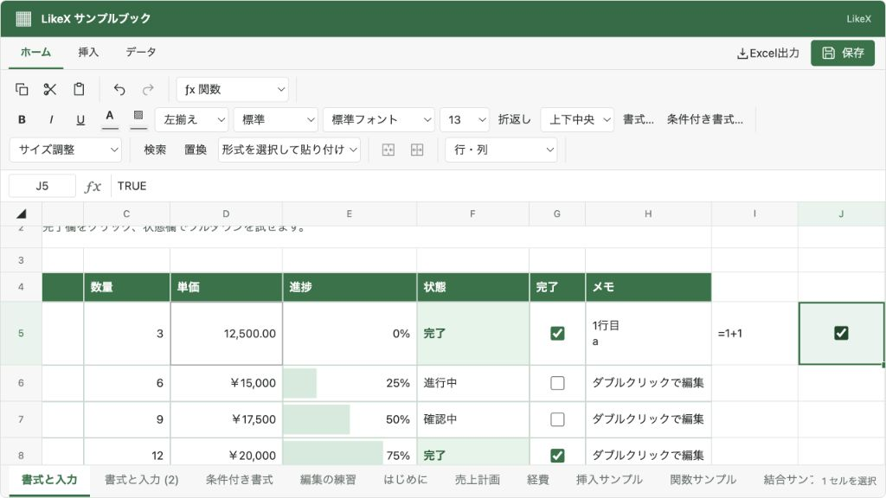

@likex/spreadsheet
入力規則
数値・日付・文字数を制限し、リスト選択やチェックボックスをセル内に表示します。
画面例を見る ↓セルの validation に入力規則を保存します。規則と値はJSONに含まれ、GUIからの入力、貼り付け、置換、外部APIでも検証します。値の表現は従来どおり文字列です。
JSONと公開型#
import type { SpreadsheetWorkbook, SpreadsheetDataValidation } from "@likex/spreadsheet";
const statusRule = {
type: "list",
values: ["未着手", "進行中", "完了"],
allowBlank: false,
message: "状態を一覧から選んでください",
} satisfies SpreadsheetDataValidation;
const workbook: SpreadsheetWorkbook = {
sheets: [{
id: "tasks", name: "タスク", rowCount: 100, columnCount: 10,
cells: {
A1: { value: "未着手", validation: statusRule },
B1: { value: "3", validation: { type: "number", integer: true, min: 0, max: 100 } },
C1: { value: "2026-09-10", validation: { type: "date", min: "2026-01-01" } },
D1: { value: "FALSE", validation: { type: "checkbox" } },
E1: { value: "メモ", validation: { type: "textLength", max: 50 } },
},
}],
};type | 設定と値の扱い |
|---|---|
list | values: readonly string[]。一覧の値との一致を検証します。大文字・小文字は区別しません。 |
number | min? / max?、integer?。有限の数値を許可し、integer: true なら整数に限定します。 |
textLength | min? / max?。文字数の範囲。絵文字などはUnicodeコードポイント単位で数えます。 |
date | min? / max? は YYYY-MM-DD。セルにも同じ形式の実在する日付を入力します。 |
checkbox | "TRUE" / "FALSE"。GUI操作でこれらの文字列を設定します。 |
共通設定の allowBlank は既定 true、message は入力エラー時の説明です。最小値・最大値はそれぞれ省略可能です。カスタム数式による入力規則には対応していません。
GUI#
セル範囲を選び、リボンの「データ」→「入力規則」で設定します。「チェックボックス」は同じダイアログをチェックボックスの設定で開きます。既存の規則は「規則を解除」で取り除けます。
リストのセルを選ぶとセル右側にプルダウンが現れます。チェックボックスはセル内で切り替えます。どちらも通常の編集許可・変更通知・履歴処理を通ります。= で始まるリスト候補を選んでも、数式として実行しません。
外部API#
SpreadsheetHandle の execute / executeAsync、batch / batchAsync に cells.validation を渡します。
// 編集許可が非同期でも扱える呼び出しです。
const result = await spreadsheetRef.current!.executeAsync({
type: "cells.validation",
sheetId: "tasks",
addresses: ["A1", "A2", "A3"],
validation: { type: "list", values: ["未着手", "進行中", "完了"] },
});
if (!result.ok) console.error(result.message);
// 値や書式を残して規則だけ解除します。
await spreadsheetRef.current!.executeAsync({
type: "cells.validation", sheetId: "tasks", addresses: ["A1"], validation: null,
});表示していないブックを純粋関数で編集する場合は setCellDataValidation(workbook, sheetId, addresses, ruleOrNull) も利用できます。元のブックを変更せず、新しいブックを返します。純粋関数にはコンポーネントの権限設定やイベント処理はありません。
不正な入力とデータ保持#
- 規則を設定する時点で既存の値も検証します。不正な値が1つでもあれば操作全体を拒否し、途中の変更は反映しません。セル消去も
allowBlankに従います。 - 複数セルへの値設定は、その操作の変更をまとめた状態で検証します。数式のセルは計算結果を検証し、参照元の変更により不正になる場合も拒否します。計算エラーや計算上限により検証できない場合も拒否します。
batchはコマンド順に検証し、どこかで失敗すればバッチ全体を取り消します。途中のコマンドだけで不正になる順序は使えません。たとえば空セルへallowBlank: falseの規則を追加する場合は、先に値を設定してください。- 値のみ・書式のみの貼り付けと外部のテキスト貼り付けは保存先の規則を維持します。内部の「すべて貼り付け」は、機能が許可されていればコピー元の規則も転送します。規則のないセルをコピーすれば保存先の規則を解除します。
- 行列の挿入・削除、切り取り移動では規則もセルと一緒に移動します。結合範囲へ規則を設定する場合は左上のセルに適用します。
規則だけの変更も未保存の変更として扱い、onChange / onSave に含めます。Undo/Redoで規則と値を戻せます。readOnly: true または onSave 未指定では設定も値の変更もできません。
機能のON/OFF#
features.dataValidation と features.checkboxes は既定 true です。
<Spreadsheet initialWorkbook={workbook} onSave={saveWorkbook}
features={{ dataValidation: true, checkboxes: false }} />dataValidation: false は設定UI・プルダウン・チェックボックス操作を非表示にし、APIでの規則設定・解除も禁止します。保存済みの規則は消さず、入力値の検証は続けます。 checkboxes: false はチェックボックスの設定・操作だけを止め、既存セルは TRUE / FALSE の値として表示します。規則の解除は dataValidation が有効なら可能です。
内部コピーやオートフィルもOFFの規則を新規設定せず、保存先の規則を維持します。これらの設定は利用者の操作を制御するもので、サーバーでの認証・認可や保存時検証を代替しません。
XLSX出力と制限#
Excel出力にはリスト・数値・文字数・日付の入力規則を含めます。リストの候補は出力専用の非表示シートと定義名で保持するため、カンマ・引用符を含む候補も利用できます。この補助シートは元のJSONや画面のシート一覧には追加しません。
チェックボックスはExcelでは 真偽値とTRUE/FALSEのリスト制約 として出力します。Excelのネイティブチェックボックスの外観や操作を再現するものではありません。日付はExcelの1900年基準に変換し、1900年より前の制約は出力時にエラーにします。
入力規則の設定は1回10,000セルまで、エラーメッセージは255文字までです。リストは1〜1,000候補、各1,000文字・合計100,000文字までで、空候補と大文字・小文字だけが違う重複は許可しません。XLSXの補助シートに出す候補は、同じリストをまとめて合計100,000件までです。Excel側のセル文字数・日付・数値の表現範囲による制限もあります。Excel出力も参照してください。
画面例
{kind=link}

{kind=link}
